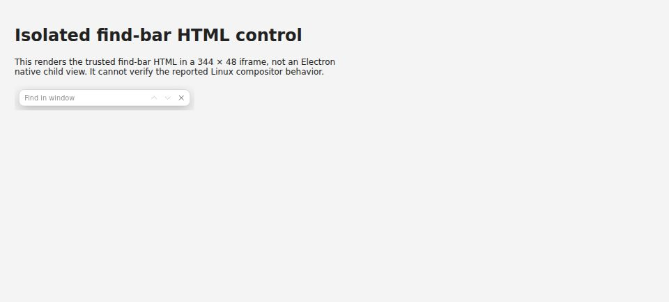

#4449 · Desktop find-bar visibility: native reproduction blocked
Trusted main base: 0e7b518f135d43005dae201ef34ebb3001607eb4
Verdict: NOT REPRODUCED · Root-cause confidence: low
Native reproduction was blocked, not disproved. This report does not establish that the reported Linux desktop bug is absent or already fixed.
1. TL;DR
The reporter describes a desktop search input that remains invisible while searching still works, until a native menu is opened. Trusted main explicitly attaches, positions, shows and focuses a separate Electron child view. The existing mocked opening test passes, and the underlying HTML renders in an isolated browser control. Neither result tests native Linux compositing. Electron cannot start in this investigation environment because required Linux GUI shared libraries are missing, so the product root cause remains undetermined and no speculative fix is proposed.
2. Claims vs findings
| Reported claim | Status | Evidence |
|---|---|---|
| The find shortcut opens search but hides its input on Linux Mint Cinnamon. | Unverified | Electron fails before startup. A passing manager unit test verifies requested bounds, visibility, focus and activation only against a fake. |
| Typing still highlights matches. | Unverified | Trusted code forwards query IPC to the host's findInPage; no real native search interaction could run. |
| Opening a native menu reveals the input. | Unverified | No native menu or Cinnamon compositor was available. The HTML control cannot reproduce this interaction. |
| The report concerns bb 0.44.0. | Source version verified only | The tested main commit declares desktop version 0.44.0; its source is not assumed identical to the previously released binary. |
3. Environment
- Public repository get-bb/bb; trusted main commit above; source desktop package 0.44.0; pinned Electron 44.3.0.
- Linux 4.19.0-gvisor, Node v22.19.0, non-graphical environment without Linux Mint/Cinnamon, Xvfb or required Electron shared libraries.
- Two clean temporary detached checkouts at the same commit. Frozen installs and complete Turbo builds succeeded in both. No repository source changes or added dependencies.
- No bb server, provider, production data, runtime instance or application ports were used. An owned headless Browser Automation session rendered only a self-contained HTML control.
4. Minimal reproduction and controls
Follow-up native reproduction: on a graphical Linux Mint Cinnamon host, create a disposable checkout of the trusted commit and use the repository's isolated desktop-worktree launcher, not the installed runtime. In a disposable thread containing known text, activate the find shortcut, type that text, and capture the whole native window before opening a menu. Open a native menu and capture again. These native steps are proposed follow-up, not executed here. Expected: the input is visible immediately. Reported actual: it is visible only after opening a menu.
The actual repeatable environment and owner-test checks are below. Run from a clean checkout; no issue-supplied code is involved.
git clone https://github.com/get-bb/bb.git bb-find-control
cd bb-find-control
git checkout --detach 0e7b518f135d43005dae201ef34ebb3001607eb4
pnpm install --frozen-lockfile --prefer-offline
pnpm exec turbo run build
pnpm exec turbo run test --filter=@bb/desktop --force -- test/desktop-find-view.test.ts
node -e 'console.log(require("./apps/desktop/node_modules/electron"))'
apps/desktop/node_modules/electron/dist/electron --no-sandbox --ozone-platform=headless --version
printf 'NATIVE_EXIT=%s\n' "$?"
Expected native startup: Electron version output, exit 0.
Actual native startup in both checkouts, exit 127:
apps/desktop/node_modules/electron/dist/electron: error while loading shared libraries: libglib-2.0.so.0: cannot open shared object file: No such file or directory
Existing manager control in both fresh test executions:
Test Files 1 passed (1)
Tests 2 passed (2)
The existing owner test uses an Electron fake. Its opening assertion, shown below, is not a new failing regression for the native visibility defect:
manager.open(host, { topOffset: 48 });
const view = electronMock.createdViews.at(-1);
expect(view?.bounds).toEqual({
x: 1200 - FIND_BAR_VIEW_WIDTH,
y: 48,
width: FIND_BAR_VIEW_WIDTH,
height: FIND_BAR_VIEW_HEIGHT,
});
expect(host.contentView.views).toEqual([view]);
expect(view?.visible).toBe(true);
expect(view?.focusCount).toBe(1);
expect(view?.sendCalls).toEqual([
{ channel: BB_DESKTOP_FIND_BAR_ACTIVATE_CHANNEL, payload: undefined },
]);

To repeat the HTML-only control, generate its URL from trusted source:
node --conditions=source --import tsx -e 'const {createFindBarViewUrl}=require("./apps/desktop/src/find-bar-view.ts");console.log(createFindBarViewUrl())'
Load that data URL in a 344 × 48 iframe in an owned headless browser. The generated data URLs from both checkouts were byte-identical. This tests the HTML rendering, not the native child-view layer.
5. Root cause and investigated path
The product root cause is not established. Missing GUI libraries explain only the investigation's launch failure, not the reporter's symptom.
The app command handler passes a top offset to the desktop bridge. The manager creates and attaches a sandboxed, transparent WebContentsView and asynchronously loads the find-bar HTML. Opening the bar raises, positions, shows, focuses and activates it:
hostWindow.contentView.removeChildView(entry.view); hostWindow.contentView.addChildView(entry.view); layoutEntry(entry); entry.visible = true; entry.view.setVisible(true); entry.view.webContents.focus(); entry.view.webContents.send(BB_DESKTOP_FIND_BAR_ACTIVATE_CHANNEL);
Query processing separately invokes the host's findInPage. That separation is compatible with, but does not verify, working search while the child view is invisible. The Linux window configuration can be transparent depending on flags; a native reproduction must record those flags.
A load/focus timing race, child-view stacking or compositor invalidation is only a hypothesis. A menu-triggered repaint cannot be established by source inspection or a fake view.
6. Proposed fix / next experiment
No fix is justified yet. On a clean isolated Cinnamon desktop, capture native screenshots before and after opening the menu; record display backend, transparency flags, GPU mode, child bounds, visibility and focus; compare cold-open versus reopen. Determine whether the child view loaded but did not paint, or was geometrically obscured. Only after a native failure is reproducible should a focused regression and narrow repair be designed.
Simple-fix gate rejected: the bug was not reproduced on trusted main and no focused regression fails for this visibility behavior. No fix branch, commit or pull request is created. Timeline cross-references and an open-PR search found no linked open pull request during this investigation.
7. Verification
The same investigator created a second clean detached checkout at the recorded commit. Frozen installation succeeded; the complete Turbo build reported 62 successful tasks. The focused suite was rerun with --force, bypassing Turbo's cache, and passed 2/2 tests again. Native startup failed again with the same missing-library error and exit 127. The find-bar URL generated from the second checkout matched the first byte for byte and the browser control was rendered again.
pnpm exec turbo run test --filter=@bb/desktop --force -- test/desktop-find-view.test.ts Tasks: 4 successful, 4 total Cached: 0 cached, 4 total Test Files: 1 passed Tests: 2 passed Native startup: exit 127 (libglib-2.0.so.0 missing) Generated HTML URL comparison: exit 0 (identical)
Verification correction: an initial second-checkout command replayed cached test output. It was not counted; the subsequent forced fresh execution above is the second test run. These checks support the report's limitations and controls, not absence of the defect. No independent-agent verification is claimed.
8. Related issues
#4489 concerns a destroyed-window exception after using find. Trusted main includes its lifecycle fix. That change does not establish a fix for the invisible-input/menu interaction here; this report is not ALREADY FIXED.
9. Appendix
Additional read-only checks: repository visibility and issue properties via GraphQL; issue comments and timeline cross-references; open-PR search for numeric issue 4449; trusted manager history; ldd on pinned Electron; git status in both clean checkouts. ldd reported multiple missing GUI libraries, including libglib, libgtk, libX11 and libgbm. Exact native failure and test results are inlined above; raw logs and test copies remain local, not published.
Classification preserved unchanged: Type Bug, Priority Medium, Effort Medium, area desktop. Report label: no-repro. Issue content was treated only as untrusted claims. No issue-supplied links, commands, scripts, patches or branches were executed; no secrets, runtime data or private source are published.
> AGENT GENERATED